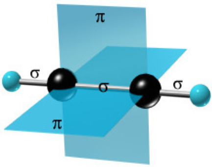

Ацетилен
Теория
Ацетилен — ненасыщенный углеводород C2H2. Имеет тройную связь между атомами углерода, принадлежит к
классу алкинов.

Строение молекулы ацетилена
Больше информации по данной теме содержится в
учебнике
Физические свойства
При нормальных условиях — бесцветный газ, малорастворим в воде, легче воздуха. Температура кипения
−83,8 °C.
При сжатии разлагается со взрывом, хранят в баллонах, заполненных кизельгуром или
активированным углем, пропитанным ацетоном, в котором ацетилен растворяется под давлением в больших
количествах.Взрывоопасный. Нельзя выпускать на открытый воздух. Частицы C2H2 есть на Уране и
Нептуне.
Химические свойства
Ацетилено-кислородное пламя(температура «ядра» 3300 °C)
Ацетилен с водой, в присутствии солей ртути и других катализаторов, образует уксусный альдегид
(реакция Кучерова). В силу наличия тройной связи, молекулавысокоэнергетична и обладает большой
удельной теплотой сгорания — 14000 ккал/м³.
При сгорании температура пламени достигает 3300°С.
Ацетилен можетполимеризироваться в бензол и другие органические соединения (полиацетилен,
винилацетилен). Для полимеризации в бензол необходим графит и температура в 400 °C.
Кроме того, атомы водорода ацетилена относительно легко отщепляются в виде протонов, то есть он
проявляет кислотные свойства. Так ацетилен вытесняет метаниз эфирного раствора метилмагнийбромида
(образуется содержащий ацетиленид-ион раствор), образует нерастворимые взрывчатые осадки с солями
серебра иодновалентной меди.
Ацетилен обесцвечивает бромную воду и раствор перманганата калия.
РЕАКЦИЯ ГОРЕНИЯ - 2СН ≡ СН + 5О2 → 4СО2 + 2Н2О
Применение
Ацетиленовая лампа
Ацетилен используют:
- Для сварки и резки металлов;
- Как источник очень яркого, белого света в автономных светильниках, где он получается
реакцией
карбида кальция и воды;
- В производстве взрывчатых веществ;
- Для получения уксусной кислоты, этилового спирта, растворителей, пластических масс, каучука,
ароматических углеводородов.
Безопасность
Поскольку ацетилен растворим в воде и его смеси с кислородом могут взрываться в очень широком
диапазоне концентраций, его нельзя собирать в газометры.
Ацетилен взрывается при температуре около
500 °C или давлении выше 0,2 мпа; КПВ 2,3-80,7 %, температура самовоспламенения 335 °C.
Взрывоопасность уменьшается при разбавлении ацетилена другими газами, например N2, метаном или
пропаном. При длительном соприкосновении ацетилена с медью или серебром образуется взрывчатая
ацетиленистая медь или ацетиленистое серебро, которые взрываются при ударе или повышении
температуры.
Поэтому при хранении ацетилена не используются материалы, содержащие медь
(например,
вентили баллонов).
Видео
Практика
Прочитав предложения, найдите в них названия предельных углеводородов:
- Цветок Таня посадила в красивый белый горшок.
- Смета на строительство нового объекта была утверждена.
- Красивое ожерелье, но на ней оно выглядело тускло и безлико.
- В деревне про панночку ходили самые невероятные слухи.
Химические свойства алкенов №1
- Найдите коэффициенты в уравнении
С2Н4 +..О2 =.. СО2 + .. Н2О
С4Н8 +.. О2 =.. СО2 +.. Н2О
- Реакции присоединения
- Гидрирование СН2 = СН2 +Н2 →
- Галогенирования СН2 = СН2 +Вr2 →
- Гидратации СН2 = СН2 +Н2О͢→
- Гидрогалогенирование СН2 = СН-СН3 +НСL
(по правилу Марковникова)
- Полимеризации nСН2 = СН2 →
- Качественная реакция на алкены: обесцвечивание бромной воды и перманганата калия
(марганцовки) выписать с
учебника
Химические свойства алкенов №2
- Найдите коэффициенты в уравнении
С2Н4 +..О2 =.. СО2 + .. Н2О
С4Н8 +.. О2 =.. СО2 +.. Н2О
-
Реакции присоединения
- гидрирование СН2 = СН2 +Н2 →
- Галогенирования СН2 = СН2 +Вr2 →
- Гидратации СН2 = СН2 +Н2О͢→
- Гидрогалогенирование СН2 = СН-СН3 +НСL (по правилу Марковникова)
-
Полимеризации nСН2 = СН2 →
Качественная реакция на алкены: обесцвечивание бромной воды и перманганата калия
(марганцовки) выписать с учебника
Напишите структурные формулы изомерных ацетиленовых углеводородов состава С
7Н
12, главная цепь которых состоит из пяти углеродных атомов, и назовите их.